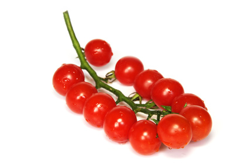

Greenhouse Tomatoes (Lycopersicon esculentum)

Mating & Breeding System: Tomato flowers grow in loose inflorescences, and hang with the reproductive organs pointing downward. They do not produce nectar. Pollen is produced within the anthers, and must be shaken out through small pores. A visiting bee must hang upside-down from the flower, grasping the stamens in its mouth, and "buzz" to agitate the flower (i.e.,“buzz pollination”). The pollen is shaken out through pores in the anther onto the underside of the foraging bee, which then uses its legs to brush the pollen into its pollen basket.
Tomato flowers are self-fertile. The probability of self-pollination varies with different varieties based on the relative timing of stigma receptivity, pollen availability, and the relative length of stigma and stamens.
Pollination, Quality & Yield: The larger the quantity of pollen delivered, the bigger the fruit and the better the shape. Tomatoes can be fully pollinated by self- or cross-pollen, and cross-pollination does not appear to improve quality.
Pollination Recommendations: Under field conditions, tomatoes can self-pollinate when wind shakes the plants and dislodges pollen from the poricidal anthers. However, this is not possible in the still air of a greenhouse. Prior to the use of bumble bees in greenhouses, human labourers had to "buzz" the flowers themselves using mechanical vibrators to release the pollen. While it is possible to use honey bees in greenhouses, they do not like the still air and tend to try to escape to forage outside. In addition, honey bees are not capable of buzz pollination.
The commercial bumble bee industry is now fully established in Ontario, especially for pollination of greenhouse tomatoes. Bumble bees will produce equal or superior quality and yield compared to electric pollination, and the reduced use of pesticides in modern greenhouses has made the use of bumble bees economically feasible. Because tomato flowers do not produce nectar, commercial producers add a source of sugar syrup to the colony container. Growers who provide additional sugar syrup can prolong colony life and further reduce pollination costs. The tendency of bees to leave through ventilation systems to forage for nectar outside the greenhouse can be diminished if the greenhouse structure transmits rather than blocks ultraviolet (UV) light. UV light seems to increase the bees’ activity levels and reduce their desire to leave, possibly because the conditions are more representative of outdoor light. This can have the added benefit of reducing the potential for commercial bumble bees to transmit diseases to wild bees.
One commercially available bumble bee colony (Bombus impatiens) can pollinate 1250 square meters of cherry tomatoes, or 2000-2500 square meters of regular tomatoes (depending on the cultivar. This rate should be adjusted in more densely planted operations, according to the recommendations of the bumble bee vendor.
References
Banda H. J. & R. J. Paxton. 1991. Pollination of greenhouse tomatoes by bees. Acta Horticulturae 288:194-198.
Dogterom, M. H., Matteoni, J.A., & Plowright, R.C. 1998. Pollination of greenhouse tomatoes by the North American Bombus vosnesenskii (Hymenoptera: Apidae). Journal of Economic Entomology 91:71-75.
Hogendoorn, K., Bartholomaeus, F., & Keller, M.A. 2010. Chemical and sensory comparison of tomatoes pollinated by bees and by a pollination wand. Journal of Economic Entomology 130:1286-1292.
Kevan, P.G., Straver, W.A., Offer, M., & Laverty, T.M. 1991. Pollination of greenhouse tomatoes by bumble bees in Ontario. Proceedings of the Entomological Society of Ontario 122:15-19.
Morandin, L.A., Laverty, T.M., & Kevan, P.G. 2001. Bumble bee (Hymenoptera: Apidae) activity and pollination levels in commercial tomato greenhouses. Journal of Economic Entomology 94:462-467.
Morandin, L.A., Laverty, T.M., Kevan, P.G., Khosla, S., & Shipp, L. 2001. Bumble bee (Hymenoptera: Apidae) activity and loss in commercial tomato greenhouses. Canadian Entomologist 133:883-893.
Palma G., Quezada-Euán, J.J.G., Reyes-Oregel, V., Meléndez, V., & Moo-Vale, H. 2008. Production of greenhouse tomatoes (Lycopersicon esculentum) using Nannotrigona perilampoides, Bombus impatiens and mechanical vibration (Hym.: Apoidea). Journal of Applied Entomology 132:79-85.
Pressman, E., Shaked, R., Rosenfeld, K. & Hefetz, A. 1999. A comparative study of the efficiency of bumble bees and an electric bee in pollinating unheated greenhouse tomatoes. Journal of Horticultural Science and Biotechnology74:101-104.
Sabara, H.A. & Winston, M.L. 2003. Managing honey bees (Hymenoptera: Apidae) for greenhouse tomato pollination. Journal of Economic Entomology 96:547-554.
Sabara, H.A., Gillespie, D.R., Elle, E., & Winston, M.L. 2004. Influence of brood, vent screening, and time of year on honey bee (Hymenoptera: Apidae) pollination and fruit quality of greenhouse tomatoes. Journal of Economic Entomology 97:727-734.
Velthuis, H.H.W. & van Doorn, A. 2006. A century of advances in bumblebee domestication and the economic and environmental aspects of its commercialization for pollination. Apidologie 37:421-451.